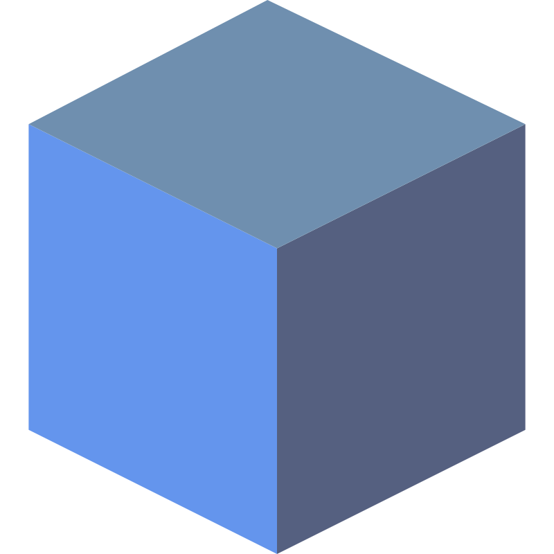

<mat-toolbar color="primary" class="flex mx-auto justify-between items-center">
  <div class="flex items-center ">
    <button *ngIf="!isLandingPage()" mat-icon-button aria-label="Menu icon" (click)="toggleMenu()">
      <mat-icon>menu</mat-icon>
    </button>
    <div class="h-9 mr-2">
      <a routerLink="/"></a>
    </div>
    <h1 class="ml-2"><a routerLink="/">Project Nexus &lt;/nX&gt;</a></h1>
  </div>
  <div class="flex items-center gap-2">
    <span *ngIf="currentUser">Hi, {{currentUser.username}}</span>
    <button *ngIf="!currentUser" mat-flat-button color="primary" routerLink="auth/login">Login</button>
    <button *ngIf="currentUser" mat-flat-button color="primary" (click)="logout()">Logout</button>
    <a href="https://github.com/milensski/project-nexus" target="_blank" mat-flat-button color="primary">
      <mat-icon>star_border</mat-icon>
      GitHub
    </a>
  </div>
</mat-toolbar>

<mat-sidenav-container class="h-full" autosize>
  <mat-sidenav *ngIf="!isLandingPage()" [opened]="true"  mode="side">
    <mat-nav-list>
      <a mat-list-item>
        <span class="entry">
          <mat-icon>house</mat-icon>
          <span *ngIf="!isCollapsed">Dashboard</span>
        </span>
      </a>
      <a mat-list-item>
        <span class="entry">
          <mat-icon>explore</mat-icon>
          <span *ngIf="!isCollapsed" routerLink="explore">Explore</span>
        </span>
      </a>
      <a mat-list-item>
        <span [matMenuTriggerFor]="menu" class="entry">
          <mat-icon>dashboard</mat-icon>
          <span *ngIf="!isCollapsed">Menu</span>
        </span>
        <mat-menu #menu="matMenu" #aboveMenu="matMenu" xPosition="before" yPosition="below">
          <button mat-menu-item>Item 1</button>
          <button mat-menu-item>Item 2</button>
        </mat-menu>
      </a>
    </mat-nav-list>
  </mat-sidenav>
  <mat-sidenav-content class="flex justify-between gap-24">
    <div class="flex-col w-8/12 m-auto mt-5">
    <router-outlet></router-outlet>
  </div>
  </mat-sidenav-content>
</mat-sidenav-container>
<app-footer></app-footer>